Debugging Python in VS Code#
As noted in our previous reading, when working with more complicated programs, we often need something more sophisticated than print() to understand why our code isn’t working. And for that, we have debuggers!
In this reading, we’ll talk about the Python Debugger in VS Code, and in particular:
Debugging
.pyfiles with the built in debuggerDebugging
.ipynbfiles (Jupyter notebooks) with debugging tools
0. Preliminaries#
Before we get started, we have to make sure your VS Code environment is properly setup. Here’s a quick checklist to make sure you are ready to go:
Install VS Code, Python, and the Python VS Code extension. Make sure you have Python installed on your system and the Python VS Code extension is also installed. You can install the VS Code Python extension by going to the Extensions Marketplace in VS Code (#1 below) and searching for “Python”, then installing the Python extension (#2 below).
Make sure the terminal is visible.If the terminal pane (#3 below) is not visible, click terminal-> new terminal. You’ll use this to view output and will want to make sure you have access to it.
Check which Python interpreter / environment you’re using. Check your Python interpreter by inspecting what’s listed in #5 below and make sure you’re using the right environment. If you use a virtual environments such as a conda environment, you’ll want to select the environment in which you’ve installed the tools you need to work with. When you click this area, it will present you with a list of the environments available on your system. Select the environment you wish to use to run your code. This is a common source of error in getting code to work: if the correct environment is not selected, your code will not work properly.
Test some simple code. Hit run (#5 below) to test your code and see if it gives you any output. A simple statement can be used like
print("It works!")as shown below that can help to verify that your Python interpreter is doing its job (as evidenced in #6 below).
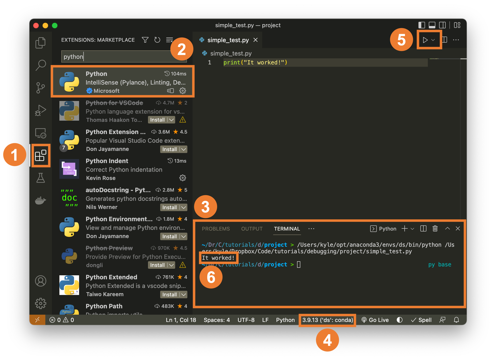
1. VS Code Debugger for .py files#
Debugging in VS Code allows us to interactively explore how the code is executing line-by-line and variable-by-variable. To start debugging, we first need to activate the debugging environment in VS Code (#1) which brings up the “Run and Debug” button, which we can use to launch a debug session. If we click this button it will run the code and stop of there are any runtime errors. However, this will not pause the code unless a runtime error is encountered, so logical errors that produce erroneous outputs will be analyzed just by pressing the button.
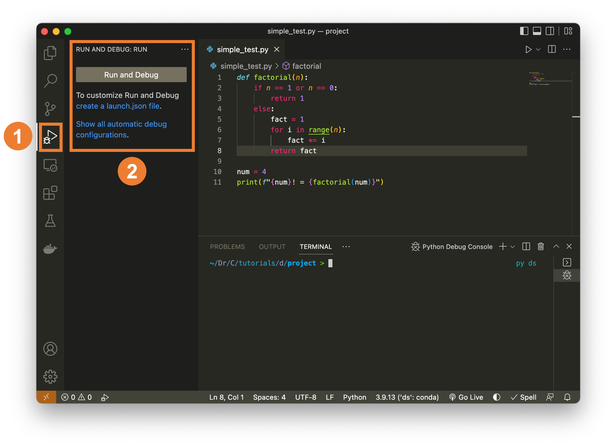
To resolve this issue, we need to set breakpoint (#1). Breakpoints are conditions that if the code reaches such a condition, the code will pause. The default breakpoint is for “Uncaught Exceptions” although we can add to that list breakpoints at any point in the code. For example if we click on the “gutter” (the space to the left of the line numbers, as shown in #2), we activate a breakpoint which means that when the execution of the code reaches that line it will pause and show you the state of all the variables in the code, which is incredibly useful (giving us the information we previously achieved through print() statements). We can activate multiple breakpoints and the program will pause execution anytime a line with a breakpoint is encountered. To remove a breakpoint, just click on the red dot or uncheck the box in the breakpoints panel (#1) to temporarily deactivate it.
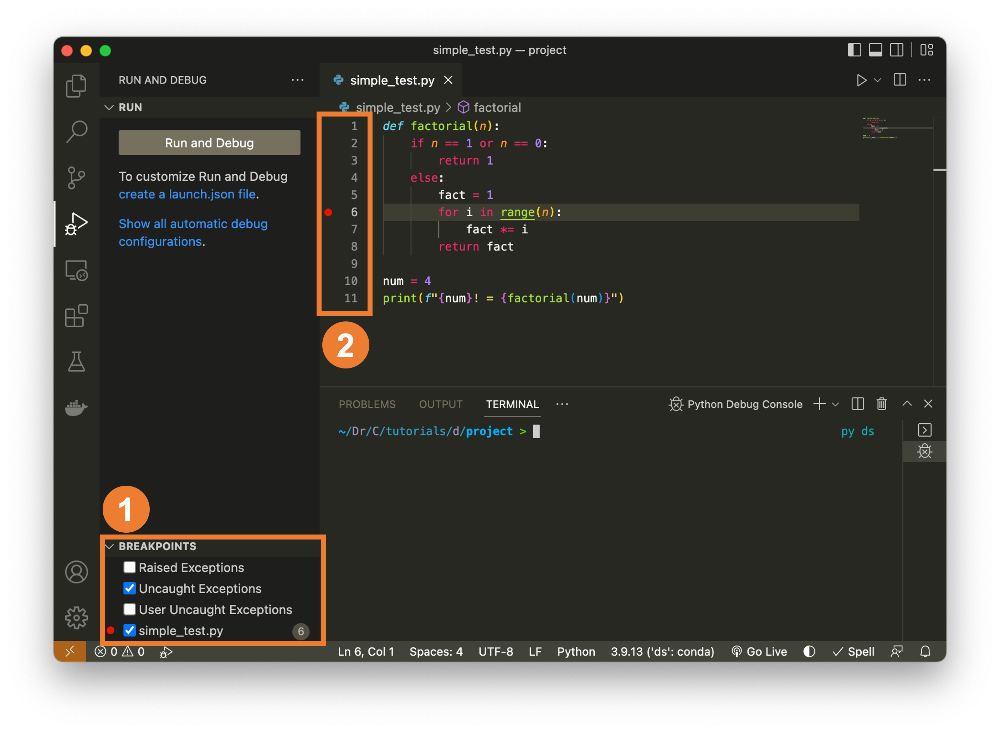
The first time we click “Run and Debug” it will ask us to choose a debug configuration. While these can be customized, we typically want to use the standard “Python File” option.
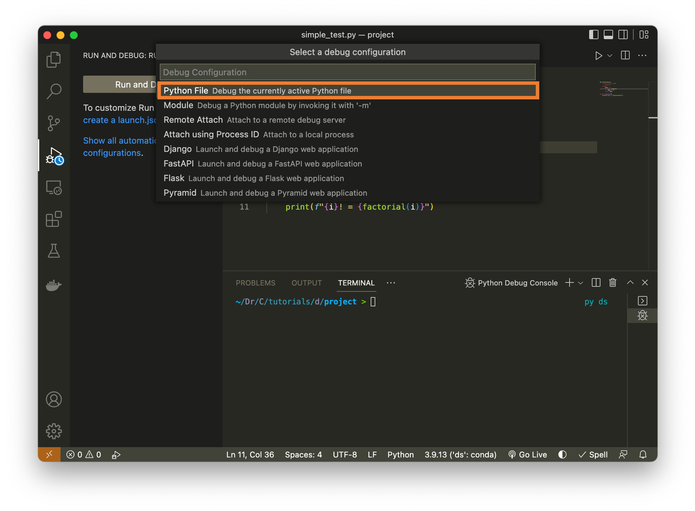
Once we’ve launched a debug session, that’s when the real power of the tool becomes clear as shown in the figure below. Let’s walk through each of the components as shown in the figure below:
Debug controls. This is the main set of tools for debugging and includes the option to (a) continue execution until the next breakpoint is reached or if execution terminates, (b) step over and stop at the next line of code - doing this allows you to execute the code line-by-line, (c) step into a function and show the execution within that function rather than in the parent function, (d) step out of a child function back up to the parent function, (e) restart execution, and (f) stop execution immediately. These controls allow us to carefully navigate through a function to explore its operation.
Execution line indicator. This tells us the next line that will be executed once execution continues.
Variable explorer panel. This shows a list of all panels either in the local scope (e.g. the current function, in this case
factorial()). This also lists all of the variables in the global scope, such asnumhere, which are not within any function. This may be one of the most important tools in the toolbox. We can look at each and every one of the variables in our code and as we step through the code execution, see how the variables change. We can even click on these values in this variable explorer and change them, which changes them in memory as well. This can be useful if we want to see if changing a value fixes a problem in our code, for example.Watch panel. This panel allows us to create custom expressions that are evaluated throughout the execution of the program to monitor them throughout. Imagine we had a function that had 1,000 variables and we only were interested in watching how a few of them changed—in this case we could add those variables to the watchlist and have them updated at each step in our debugging process.
Call stack. The call stack shows the different functions that are run here and as the program steps into each function, the local scope is changed to that function’s scope and the function is added to the call stack. If we click on the different items in the call stack, it will show us the current point of execution in each.
Debug console. The debug console allows us to interact with the variables at any step in the execution for which execution is paused. This can be incredibly issue to diagnose potential issues in the program because it allows full interactive access to the current state of the variables in the midst of execution.
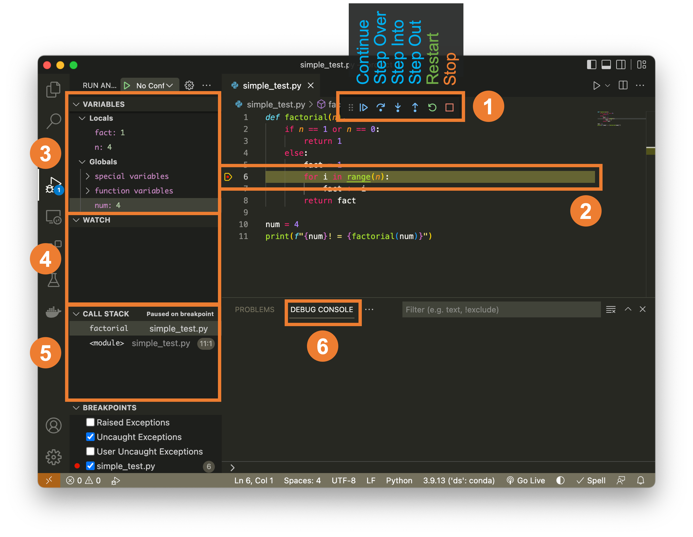
Let’s walk through an example of using the debugging tool as shown below. Here we can see that the debugger pauses execution at the breakpoint set at line 6. As we step through execution, we can see the variables fact and i changing as execution continues and it becomes clear that i takes on the value of 0 initially, forcing fact to 0 and that value propagates through until it is returned. This allows us to easily see the source of the error without the need of modifying the content of the code at all!
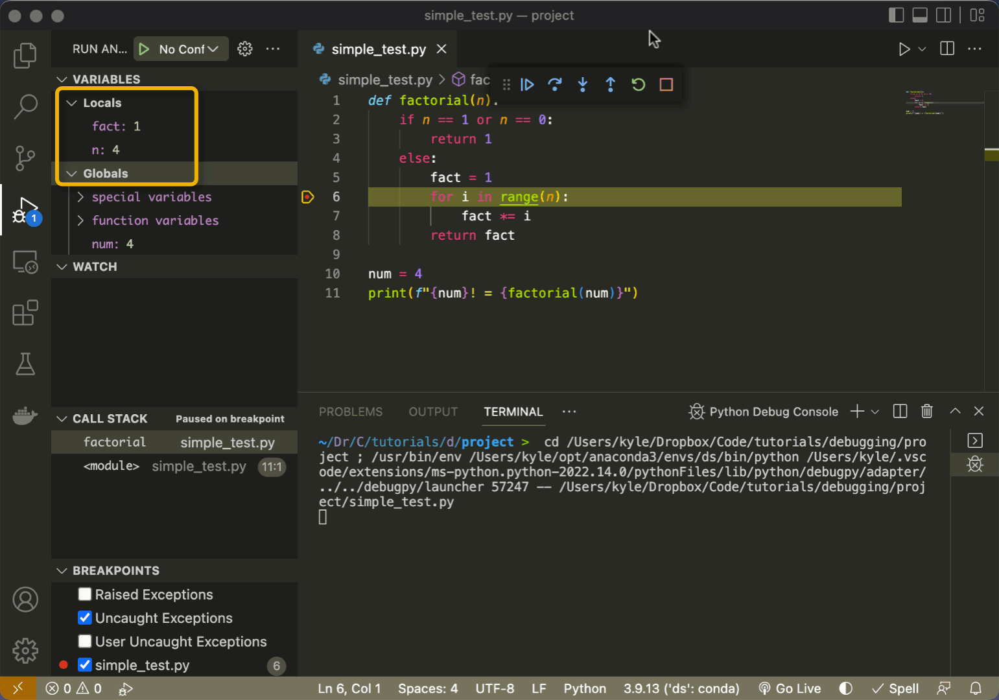
Additionally, we could set a watch on variables i and fact or even on the product of i and fact:
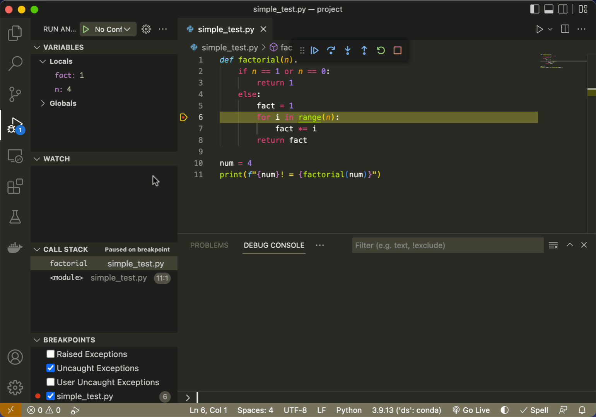
This tool can be particularly useful when dealing exploring matrices, which we can explore through the data viewer in the variable explorer.
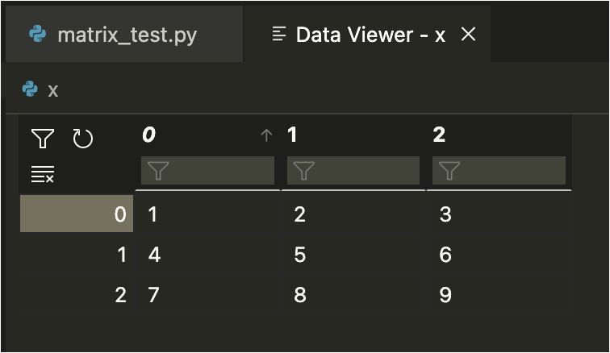
The data viewer can be used to explore the data in a matrix including sorting and filtering by column:
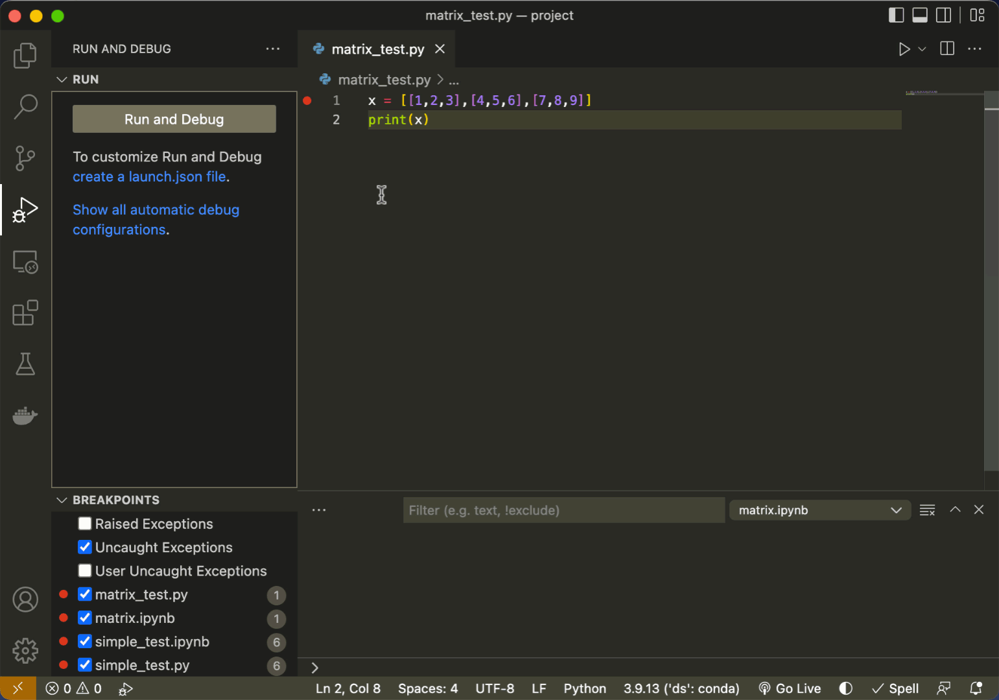
Additionally, we can interact with any of the variables in the program using the debugger console as shown here evaluating i, fact, and i*fact. We can also introduce new variables directly into the current scope. To give an example, we’ll add y = 27 and z = [1, 2, 3, 4]. We can even edit those variables in the variable explorer and if any other variables relied upon them in the program, it would use the new values we input.
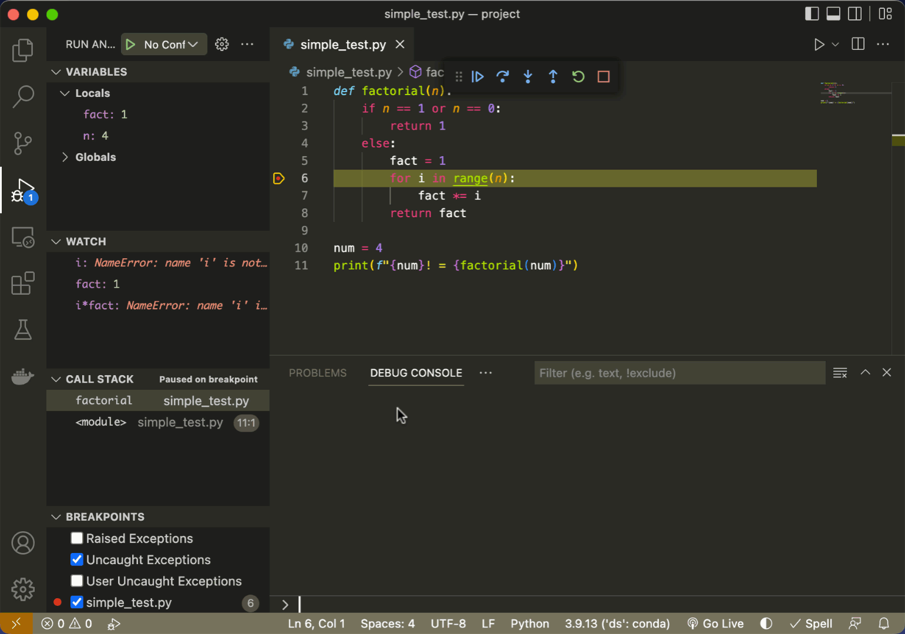
One last handy feature of the debugger is that one a breakpoint is activated, if you hover over a variable, you will be able to see it’s contents in a small tooltip box that appears near your cursor. For example:
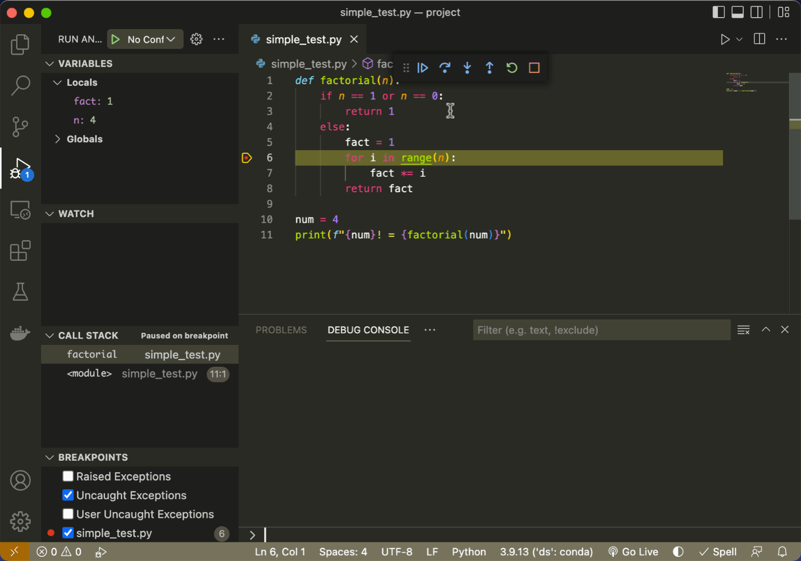
This suite of debugging tools is incredibly useful for debugging complicated programs and as you can see, it requires no additional code to be added! What’s most valuable about these tools is that they quickly give you insights into how a program is running and allows you to explore the logic of the code interactively.
2. VS Code Debugger for .ipynb files (Jupyter notebooks)#
Another major advantage of VS Code is that it provides many of the same debugging features for Jupyter notebooks. For example, you can activate breakpoints in any code cell (#1), run as a debug session using the small downward pointing arrow next to the run button (#2) or even just quickly run one line at a time in a cell using the run-by-line button.
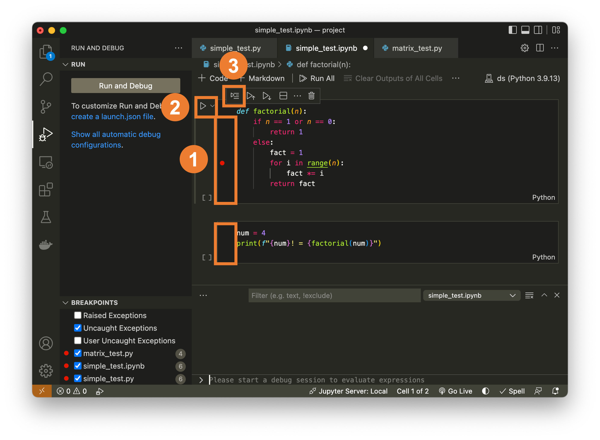
Let’s replicate the debugging process that we used previously in this Jupyter session showing the interactive tools, the debugging console, the variable watch list, and the ability to hover over values and see their contents:
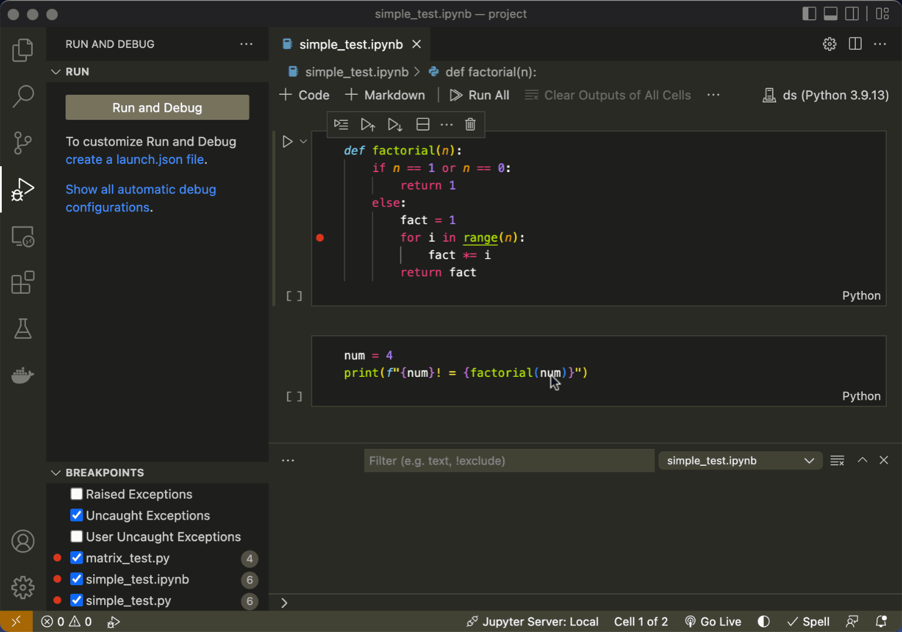
The last Jupyter debugging feature to mention here is the line-by-line execution button. While not incorporating the use of breakpoints as the previously described features, this tool gives you the abilities to view and watch variables through line-by-line execution, just as before. We also show another Jupyter tool that can be helpful for debugging, which is the Jupyter:variables console. This is similar to the debugging variable explorer, but is available outside of a debugging session, which makes it highly useful for debugging issues in Jupyter notebooks. Jupyter:variables consoles also have access to the data viewer tool we discussed earlier - extremely helpful for exploring matrices.
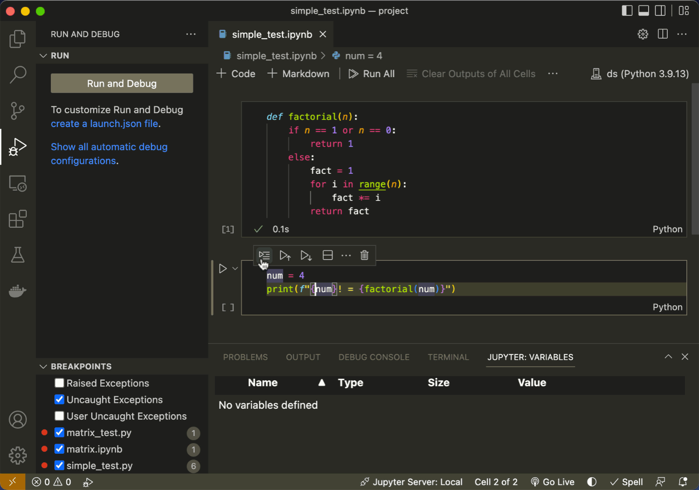
Debugging Summary#
There are two primary types of bugs: syntax errors and logical errors. Syntax errors typically prevent your code from running, so are more easily identified, while logical errors may cause your code to fail silently: producing output, but incorrect output.
The best debugging tool is the one that helps you understand what’s going on in your code well enough to identify and resolve errors.
print()statements can be effectively used for debugging Python, but they require editing code directly, which is often undesirable, and can be cumbersome to use when the code is complex.VS Code offers extremely powerful tools for debugging
.pyfiles that allows you to watch the values of variables at any point in execution, execute custom code at any point in the program interactively, create breakpoints when and where you need them to pause the program, view the contents of matrices (and sort/filter) to inspect every detail of your code, and to step through, line-by-line or run until the nearest breakpoint.Most of the VS Code tools for debugging
.pyfiles can also be applied to Jupyter notebooks (.ipynbfiles). Additionally, Jupyter notebooks give you access the the Jupyter:variables console, which gives you access to the state of the variables at all times, even outside of a debugging session.